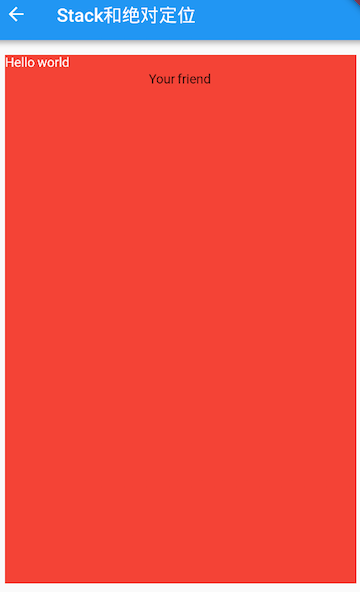

4.5 层叠布局 Stack、Positioned¶
层叠布局和Web中的绝对定位、Android中的Frame布局是相似的，子组件可以根据距父容器四个角的位置来确定自身的位置。绝对定位允许子组件堆叠起来（按照代码中声明的顺序）。Flutter中使用Stack和Positioned这两个组件来配合实现绝对定位。Stack允许子组件堆叠，而Positioned用于根据Stack的四个角来确定子组件的位置。
Stack¶
Stack({
this.alignment = AlignmentDirectional.topStart,
this.textDirection,
this.fit = StackFit.loose,
this.overflow = Overflow.clip,
List<Widget> children = const <Widget>[],
})
alignment：此参数决定如何去对齐没有定位（没有使用Positioned）或部分定位的子组件。所谓部分定位，在这里特指没有在某一个轴上定位：left、right为横轴，top、bottom为纵轴，只要包含某个轴上的一个定位属性就算在该轴上有定位。textDirection：和Row、Wrap的textDirection功能一样，都用于确定alignment对齐的参考系，即：textDirection的值为TextDirection.ltr，则alignment的start代表左，end代表右，即从左往右的顺序；textDirection的值为TextDirection.rtl，则alignment的start代表右，end代表左，即从右往左的顺序。fit：此参数用于确定没有定位的子组件如何去适应Stack的大小。StackFit.loose表示使用子组件的大小，StackFit.expand表示扩伸到Stack的大小。overflow：此属性决定如何显示超出Stack显示空间的子组件；值为Overflow.clip时，超出部分会被剪裁（隐藏），值为Overflow.visible时则不会。
Positioned¶
const Positioned({
Key key,
this.left,
this.top,
this.right,
this.bottom,
this.width,
this.height,
@required Widget child,
})
left、top 、right、 bottom分别代表离Stack左、上、右、底四边的距离。width和height用于指定需要定位元素的宽度和高度。注意，Positioned的width、height 和其它地方的意义稍微有点区别，此处用于配合left、top 、right、 bottom来定位组件，举个例子，在水平方向时，你只能指定left、right、width三个属性中的两个，如指定left和width后，right会自动算出(left+width)，如果同时指定三个属性则会报错，垂直方向同理。
示例¶
在下面的例子中，我们通过对几个Text组件的定位来演示Stack和Positioned的特性：
//通过ConstrainedBox来确保Stack占满屏幕
ConstrainedBox(
constraints: BoxConstraints.expand(),
child: Stack(
alignment:Alignment.center , //指定未定位或部分定位widget的对齐方式
children: <Widget>[
Container(child: Text("Hello world",style: TextStyle(color: Colors.white)),
color: Colors.red,
),
Positioned(
left: 18.0,
child: Text("I am Jack"),
),
Positioned(
top: 18.0,
child: Text("Your friend"),
)
],
),
);
运行效果见图4-9：

由于第一个子文本组件Text("Hello world")没有指定定位，并且alignment值为Alignment.center，所以它会居中显示。第二个子文本组件Text("I am Jack")只指定了水平方向的定位(left)，所以属于部分定位，即垂直方向上没有定位，那么它在垂直方向的对齐方式则会按照alignment指定的对齐方式对齐，即垂直方向居中。对于第三个子文本组件Text("Your friend")，和第二个Text原理一样，只不过是水平方向没有定位，则水平方向居中。
我们给上例中的Stack指定一个fit属性，然后将三个子文本组件的顺序调整一下：
Stack(
alignment:Alignment.center ,
fit: StackFit.expand, //未定位widget占满Stack整个空间
children: <Widget>[
Positioned(
left: 18.0,
child: Text("I am Jack"),
),
Container(child: Text("Hello world",style: TextStyle(color: Colors.white)),
color: Colors.red,
),
Positioned(
top: 18.0,
child: Text("Your friend"),
)
],
),
显示效果如图4-10所示：

可以看到，由于第二个子文本组件没有定位，所以fit属性会对它起作用，就会占满Stack。由于Stack子元素是堆叠的，所以第一个子文本组件被第二个遮住了，而第三个在最上层，所以可以正常显示。